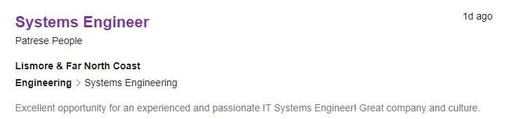

My personal info
Hello! My name is Lachlan, and I do mechanical engineering here at RMIT. I'm in my final year and semester, so I figured I may as well branch out a bit more into the world of programming and IT with this course before I finish up.
Previously, I've only delved into programming through some tutorial sessions on my free time back at school, with some courses in my program having also touched the subject for a main part of the session, such as in mechatronics or manufacturing systems as well as having done programming as another elective, like this IT one.
Having lived in the Victorian alpine countryside for most of my life, I found the city a little interesting for the years I was attending university, though when COVID-19 hit, I promptly moved back home with everything becoming online now. While I've always kept my options open and have not offically locked in any post-graduate options next year, I have been planning to go further into a more systems-oriented career as opposed to a manufacturing-based one.
My interest in IT
I've always had some interest in programming and I've been messing around with HTML as well as Javascript as far back as in my earlier school years. While I haven't done any large-scale projects related to IT yet, I often experimented with Javascript and practiced it, jQuery, HTML and CSS on my own time using online resources such as W3Schools and Codecademy.
I came to RMIT so that I could further advance my studies and learn in a new environment, since living in a very rural section of Victoria is a very different experience compared to how it is in the city. However, given the current COVID-19 situation since last year, I've since moved back. Although I'm doing an engineering course, I want to branch my knowledge out more towards programming in order to increase my versatility and viability in employment. Furthermore, the coursework I was given in my program allowed me to operate machines using Arduino circuitry and show how things work internally, such as gears and hardware as well as 3D Modelling using engineering design tools such as Fluent and CATIA.
My personal ideal job
Initially, I was well on the road to looking out for engineering pathways which would've complemented my studies and overall degree, however given the circumstances of the pandemic I have felt as though it is important to further branch out into a career which allowed me to at least have some capability of working online, which IT is known to encourage and help with. Thankfully, mechanical engineering is a very versatile degree, and it has helped me learn a variety of subjects helping me out with finding the pathway I ultimately want to choose, such as physics, mathematics, chemistry, design, machinery and of course, programming.

This is one of the career pathways I feel is ideal for me, because it relates to the handling of network infrastructure and handling of IT issues, in particular troubleshooting and ensuring that servers and other matters in the network work as intended, which is something I would find myself particularly enjoying as it is largely problem solving; something which I have done in my maths and physics courses before plenty of times. Additionally, it's located in the remote New South Wales regional city of Lismore, far enough from Brisbane and Sydney so that I can continue enjoying the countryside; it's much smaller than say, Wodonga.
However, this particular listing does require at least five years of experience in a similar field, so it will take some time before I reach that point. However, there are some methods I have thought which may help benefit my chances in finding a job like this:
My test results
Myers-Briggs: INTP-A
Big Five Personality Test:
Project idea
My project is simple - having a Java-programmed Android application on a phone be able to detect sounds and return the frequency as well as the note related to it in a simplistic manner to help with tuning.
My general motivation for this project revolves around my capstone project - which is in a similar vein
We ask that you submit original artwork. Please respect copyright laws. Please keep objectionable material to a minimum, and try to incorporate unique and interesting visual themes to your work. We’re well past the point of needing another garden-related design.
This is a learning exercise as well as a demonstration. You retain full copyright on your graphics (with limited exceptions, see submission guidelines), but we ask you release your CSS under a Creative Commons license identical to the one on this site so that others may learn from your work.
By Dave Shea. Bandwidth graciously donated by mediatemple. Now available: Zen Garden, the book.